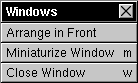

The Windows Menu

The Windows Menu allows you to:
 Arrange all your sound documents in Front of each other neatly.
Arrange all your sound documents in Front of each other neatly.
 Miniaturize your current sound documents' Window.
Miniaturize your current sound documents' Window.
 Close your current sound documents' Window.
Close your current sound documents' Window.
As the number of your open sound documents increases, the Windows menu grows, displaying the name of each document in a menu option. Choosing any of these options brings that document to the front.